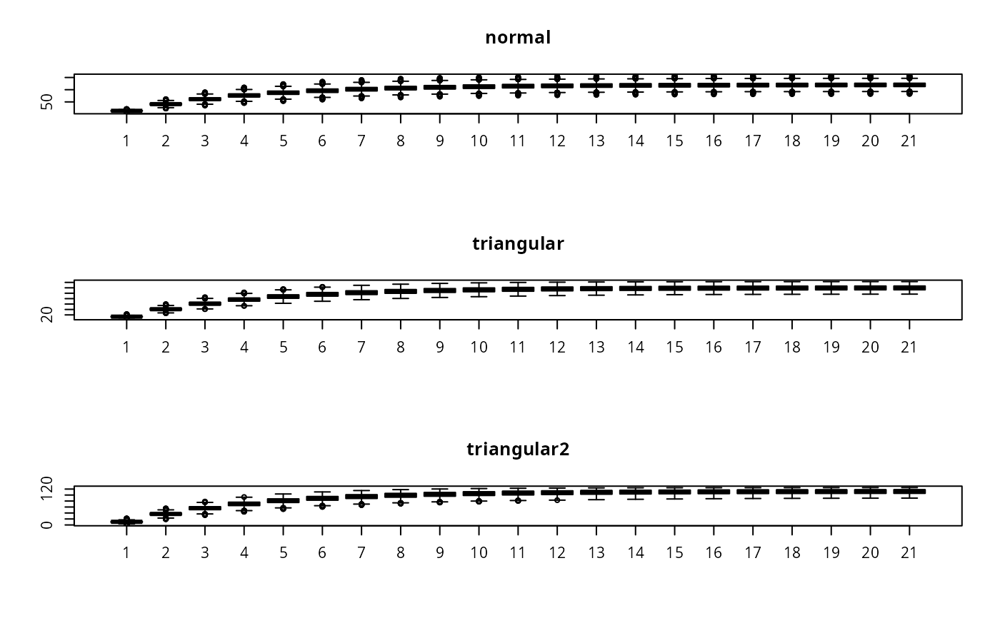
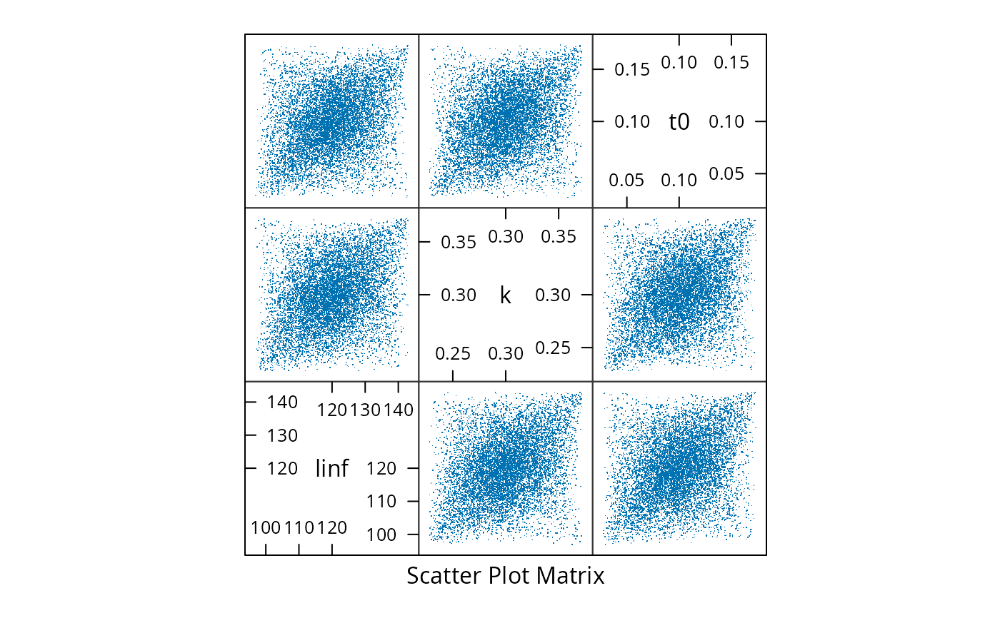

mvrtriangle.RdSimulates model parameters using elliptical copulas and triangular marginals.
mvrtriangle(n, object, ...)
# S4 method for class 'numeric,FLModelSim'
mvrtriangle(n = 1, object, ...)an FLModelSim object with n sets of parameters
# Set up the FLModelSim object
mm <- matrix(NA, ncol=3, nrow=3)
diag(mm) <- c(100, 0.001,0.001)
mm[upper.tri(mm)] <- mm[lower.tri(mm)] <- c(0.1,0.1,0.0003)
md <- ~linf*(1-exp(-k*(t-t0)))
prs <- FLPar(linf=120, k=0.3, t0=0.1, units=c("cm","yr^-1","yr"))
vb <- FLModelSim(model=md, params=prs, vcov=mm, distr="norm")
# Simulate from a multivariate normal distribution...
set.seed(1)
vbSim <- mvrnorm(10000, vb)
mm <- predict(vbSim, t=0:20+0.5)
#...from a multivariate triangular distribution with default ranges (0.01 and
# 0.99 quantiles for min and max using a normal distribution with mean from
# params and sigma from vcov, and with the apex located at params)...
set.seed(1)
vbSim1 <- mvrtriangle(10000, vb)
mm1 <- predict(vbSim1, t=0:20+0.5)
#...and from a multivariate triangular distribution with specified ranges
# (note if "c" is missing, it will take the average of "a" and "b")
set.seed(1)
pars <- list(list(a=90, b=125, c=120), list(a=0.2, b=0.4), list(a=0, b=0.4, c=0.1))
vbSim2 <- mvrtriangle(10000, vb, paramMargins=pars)
mm2 <- predict(vbSim2, t=0:20+0.5)
# Plot the results
par(mfrow=c(3,1))
boxplot(t(mm), main="normal")
boxplot(t(mm1), main="triangular")
boxplot(t(mm2), main="triangular2")

splom(data.frame(t(params(vbSim)@.Data)), pch=".")
splom(data.frame(t(params(vbSim1)@.Data)), pch=".")

splom(data.frame(t(params(vbSim2)@.Data)), pch=".")